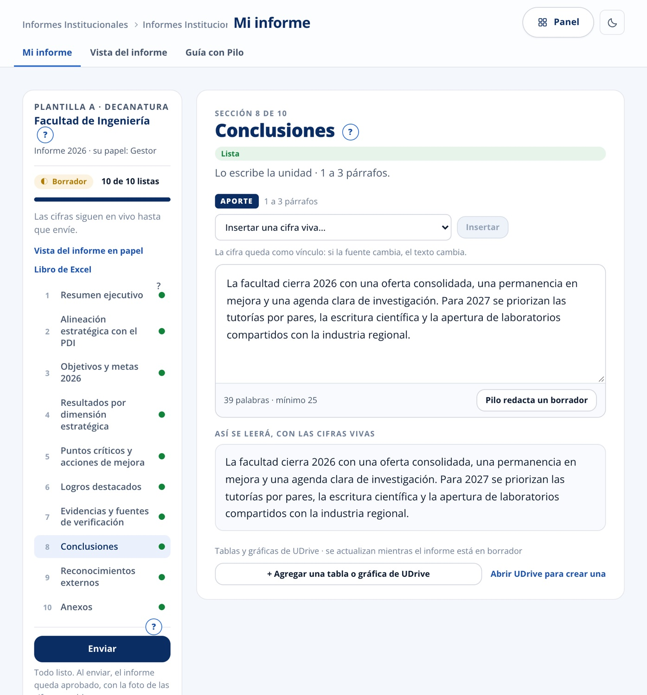
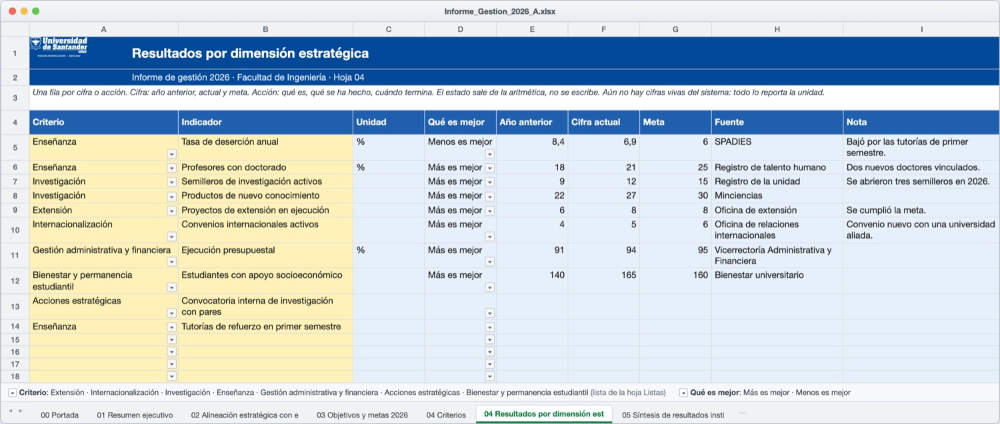
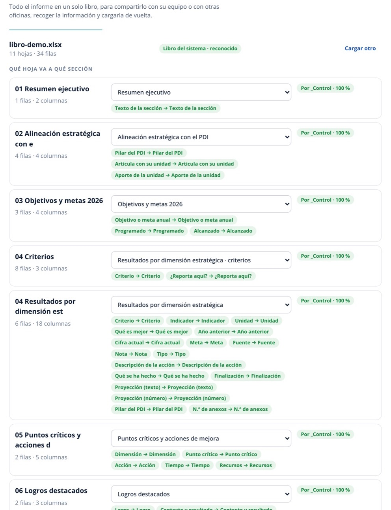

Informes Institucionales · Ciclo 2026
Informe deGestión 2026
Cómo lo construimos entre todos: la plataforma y el libro de Excel.
Plataforma
Cifras del portal ya cargadas
Libro de Excel

El recorrido
Siete pasos, de izquierda a derecha
- CicloPlaneación abre el año y fija la fecha límite.Planeación
- EstructuraQué secciones lleva cada unidad.Planeación
- ResponsablesQuién escribe el informe de cada unidad.Planeación
- DiligenciarLa unidad escribe, con cifras vivas y evidencias.Su unidadUsted entra aquí
- EnviarEl Gestor envía. El informe queda aprobado.Gestor
- RevisiónSe puede devolver con una nota.Planeación
- ExportablesExcel, vista en papel, PDF y presentación.Sistema
Informes de gestión · Ciclo 202602 / 11
Los cuatro papeles
Quién hace qué en el informe
Administrador
Es Planeación. Abre el ciclo, define la estructura y asigna responsables.
Gestor
Diligencia el informe de su unidad y lo envía.
EnvíaContribuyente
Ayuda a escribir las secciones.
No envíaConsulta
Lee el informe completo. No escribe nada.
Solo leeSe llega a ser Gestor cuando Planeación lo asigna enResponsables
Informes de gestión · Ciclo 202603 / 11
El Gestor · Mi informe
Su informe,sección por sección
- 1Entre a «Mi informe»
- 2Mire su papel y el avance
- 3Abra cada secciónTextoCifrasAlineación con el PDIMetasResultadosPuntos críticosLogrosEvidencias
- 4Cite las cifras vivas[[matric]]→2.851
- 5Deje los controles en verde
- 6Guardado automático

Informes de gestión · Ciclo 202604 / 11
Enviar y devolver
De «Lista»a «Aprobado»
- 1Todas las secciones en «Lista»
- 2Al menos una evidencia cargada
- 3«Enviar» se habilitaLas cifras quedan congeladas.
- 4Planeación puede devolverloCon una nota general y una por sección.
- 5Corrija, guarde y reenvíe
◐ Borrador✓ Aprobado↩ Devuelto


Informes de gestión · Ciclo 202605 / 11
El Contribuyente
Escribe, sube yavisa al Gestor
Puede
- Escribir las mismas secciones
- Subir evidencias
- Pedir ayuda a Pilo
No puede
- Enviar el informe
- El botón dice por qué
Cuando todo esté listo, avise al Gestor
La plataforma no lo envía por correo

Informes de gestión · Ciclo 202606 / 11
El libro de Excel · 1 Exportar
Un libro para cadaequipo
Informe_Gestion_2026_A.xlsxLibro completo · todas las hojas
Quien lidera el informesolo sus hojas
Decanaturasolo sus hojas
Dirección de programasolo sus hojas
Coordinaciones de investigación y extensiónsolo sus hojas
Secretaría académicasolo sus hojas

Informes de gestión · Ciclo 202607 / 11
Cómo se llena
Tres colores, siempre los mismos

Azul claro · opcional
Amarillo · obligatoria
Gris · la pone el sistema
Informes de gestión · Ciclo 202608 / 11
El libro de Excel · 2 Importar
Subirlo a lapágina, en seis pasos
- 1Cargue el archivo .xlsx
- 2Revise el destino de cada hoja
- 3Mire las filas listas y los avisos
- 4Elija cómo aplicar
- 5Indique quién aporta
- 6Aplique al informe


Agregar al finalLlenar solo lo vacíoReemplazar la sección
Suma lo del libro sin tocar lo escrito. Es el modo por defecto.Completa lo que falta y suma las filas que no existen.Lo del libro queda en lugar de lo que había. Pide confirmación.
Aporta: Secretaría académica
Aplicar al informe
Informes de gestión · Ciclo 202609 / 11
Si algo no entra
El sistemadice qué falló
- 1Libro de otro informeSe rechaza sin leerlo. Descargue uno nuevo.
- 2Fila con avisoDice la hoja, la fila y el problema.
- 3La causa casi siempreUn número con letras o un Sí o No mal escrito.


Descargar libro nuevo
Informes de gestión · Ciclo 202610 / 11
Antes de importar
Revise cuatro cosas
- El libro salió de este informe
- Nadie renombró hojas ni movió la fila 4
- Los números van con cifras
- Se borraron las filas de ejemplo

Listo para enviar
Informes Institucionales · Ciclo 2026
Gracias por aportaral Informe de Gestión 2026